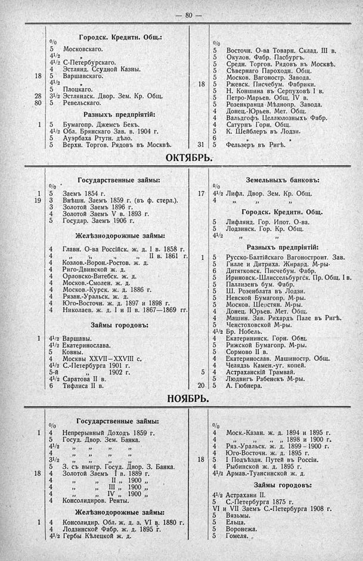

Лист источника 126
Скан

Распознанный текст
— 80 —
Городск. Кредитн. Общ.:
%
5 Московскаго.
4½ ”
4½ С-Петербургскаго.
4 Эстлянд. Ссудной Казны.
18 5 Варшавскаго.
4½ ”
5 Плоцкаго.
28 3½ Эстляндск. Двор. Зем. Кр. Общ.
80 5 Ревельскаго.
Разныхъ предпріятій:
1 5 Бумагопр. Джемсъ Бекъ.
4½ Обл. Брянскаго Зав. в. 1904 г.
5 Ауэрбаха Ртутн. дѣло.
5 Верхн. Торгов. Рядовъ въ Москвѣ.
%
5 Восточн. О-ва Товарн. Склад. III в.
5 Окулов. Фабр. Пасбургъ.
5 Средн. Торгов. Рядовъ въ Москвѣ.
5 Сѣвернаго Пароходн. Общ.
5 Москов. Вагоностр. Завода.
18 5 Ржевск. Писчебум. Фабрики.
5 Н. Коншина въ Серпуховѣ I в.
5 Петро-Марьев. Общ. IV в.
5 Розенкранца Мѣднопр. Завода.
4 Донец.-Юрьев. Мет. Общ.
4 Вальдгофъ Целлюлозныхъ Фабр.
4 Сатурнъ Горн. Общ.
5 К. Шейблеръ въ Лодзи.
6 ” ”
31 5 Фельзеръ въ Ригѣ.
ОКТЯБРЬ.
Государственные займы:
%
1 5 Заемъ 1854 г.
19 3 Внѣшн. Заемъ 1859 г. (въ ф. стерл.).
3 Золотой Заемъ 1896 г.
4 Золотой Заемъ V в. 1893 г.
5 Государ. Заемъ 1906 г.
Желѣзнодорожные займы:
4 Главн. О-ва Россійск. ж. д. I в. 1858 г.
4 ” ” ” II в. 1861 г.
4 Козлов.-Ворон.-Ростов. ж. д.
4 Риго-Двинской ж. д.
4 Орловско-Витебск. ж. д.
4 Москов.-Смолен. ж. д.
4 Москов.-Курск. ж. д. 1886 г.
4 Рязан.-Уральск. ж. д.
4 Юго-Восточн. ж. д. 1897 и 1898 г.
4 Николаев. ж. д. I и II в. 1867—1869 гг.
Займы городовъ:
1 4½ Варшавы.
4½ Екатеринослава.
5 Ковны.
4 Москвы XXVII—XXVIII с.
4½ С.-Петербурга 1901 г.
5-й ” 1902 г.
4½ Саратова II в.
6 Тифлиса II в.
Земельныхъ банковъ:
%
17 4½ Лифл. Двор. Зем. Кр. Общ.
4 ” ” ”
Городск. Кредитн. Общ.
5 Лифлянд. Гор. Ипот. О-ва.
5 Лодзинск. Гор. Кр. Общ.
4½ ” ”
Разныхъ предпріятій:
1 5 Русско-Балтійскаго Вагоностроит. Зав.
5 Гилле и Дитриха. Жирард. М-ры.
6 Дитятковск. Писчебум. Фабр.
5 Ириновск.-Шлиссельбургск. Пр. Общ. I в.
5 Паллизенъ бум. Фабр.
5 Ш. Розенблата въ Лодзи.
5 Невской Бумагопр. М-ры.
5 Москов. Шерстян. М-ры.
4 Донец. Юрьев. Мет. Общ.
4 Машин. Зав. Рихардъ Пале въ Ригѣ.
5 Ченстоховской М-ры.
4½ Бр. Нобель.
4 Екатерининск. Горн. Общ.
5 Рижской Бумагопр. М-ры.
5 Сормово II в.
4 Екатеринослав. Машиностр. Общ.
4 Челядзь Камен.-уг. копей.
5 4 Астраханскій Трамвай.
5 Людвигъ Рабенекъ М-ры.
20 5 А. Гюбнера.
НОЯБРЬ.
Государственные займы:
%
1 4 Непрерывный Доходъ 1859 г.
5 Госуд. Двор. Зем. Банка.
4½ ” ” ” ”
4 ” ” ” ”
3½ ” ” ” ”
5 З. съ выигр. Госуд. Двор. З. Банка.
18 4 Золотой Заемъ I в. 1889 г.
4 ” ” II ” 1900 ”
4 ” ” III ” 1900 ”
4 ” ” IV ” 1900 ”
4 Консолидиров. Ренты.
Желѣзнодорожные займы:
1 4 Консолидир. Обл. ж. д. з. VI в. 1880 г.
4 Лодзинской Фабр. ж. д. 1895 г.
4½ Гербы Кѣлецкой ж. д.
%
4 Моск.-Казан. ж. д. 1894 и 1895 г.
4 ” ” ” ” 1898 и 1900 г.
4 Ряз.-Уральск. ж. д. 1899 — 1900 г.
4 Юго-Восточн. ж. д. 1895 г.
18 5 I Подъѣздн. Путей въ Россіи.
4 Рыбинской ж. д. 1895 г.
4½ Армав.-Туапсинской ж. д.
Займы городовъ:
4½ Астрахани II.
5 С.-Петербурга 1875 г.
VI и VII Заемъ С.-Петербурга 1908 г.
5 Вяземы.
5 Ельца.
5 Воронежа.
5 Гомеля.